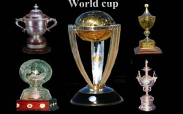

World Cup:

Just like other games. World Cup has the special mention when it comes to Cricket. It is the most prestigious and honorable tournament. It’s played once in every 4 years. It’s one among the world’s most viewed sport event. ICC claims it as the biggest and the number one event in the Cricket. It has a good number of matches. It has 4 stages, Super 8, 6, semi finals and finals.
This is the dream-come-true trophy for every cricketer; Sachin once said that lifting the world cup is the best moment in life and the fulfillment of cricket comes through winning this trophy. Earlier various trophies were presented as seen in the picture, but later on ICC fixed one final trophy which is seen in the center of the photograph. All in all Cricket’s best trophy and tournament that every cricket player aspires to win and every cricket lover dreams their country to hold.